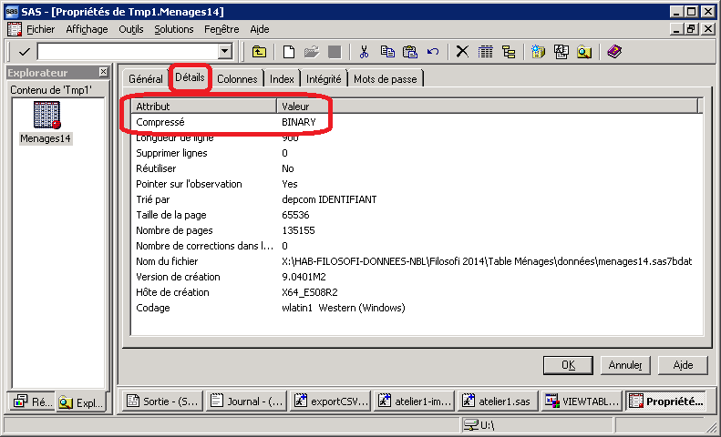

Importer des tables SAS®
Tâches concernées et recommandations
L’utilisateur souhaite importer dans R des données stockées sous forme de tables SAS.
Deux méthodes sont recommandées pour importer des tables SAS avec R :
- méthode en une étape : utiliser la fonction
read_sas()du packagehaven. - méthode en deux étapes : Exporter les données SAS en format
.csv, puis les importer enR.
Les particularités du format des tables SAS peuvent être source de difficultés lorsqu’on veut les importer avec R. Il est fortement recommandé de tester la méthode d’importation choisie sur un petit échantillon de données avant d’importer les données, en particulier lorsque celles-ci sont volumineuses. Il est également recommandé d’essayer l’autre méthode si la première ne fonctionne pas correctement, ou si elle est trop lente.
En revanche, il est fortement déconseillé d’utiliser les packages suivants pour importer des données SAS : sas7dbat, foreign, Hmisc, SASxport.
Première méthode : le package haven
Utiliser le package haven est la méthode la plus simple pour importer des tables SAS avec R. Toutefois, cette méthode n’est pas entièrement fiable, et peut aboutir à des erreurs inattendues (notamment lorsque la table SAS est compressée en BINARY).
Utiliser la fonction read_sas()
Le package haven propose la fonction read_sas() pour importer des tables SAS. Voici un exemple simple (qui ne peut être exécuté que dans AUS) :
Voici les principaux arguments et options de read_sas() :
| Argument | Valeur par défaut | Fonction |
|---|---|---|
data_file |
Aucune | Le chemin de la table SAS à importer |
col_select |
Toutes les variables | Sélectionner les variables (voir ci-dessous) |
skip |
0 |
Sauter les n premières lignes (0 par défaut) |
n_max |
Inf |
Nombre maximum de lignes à importer (pas de limite par défaut) |
encoding |
NULL |
Préciser l’encodage de la table SAS (normalement read_sas() le trouve automatiquement) |
La fonction read_sas() importe par défaut toutes les colonnes du fichier. Pour sélectionner les colonnes à importer, on peut utiliser l’option col_select. Cette option peut s’utiliser de plusieurs façons :
- Sous la forme d’une liste de noms de variables. Exemple :
col_select = c("var1", "var3", "var4"). - Avec des outils issus de
dplyrpour sélectionner les variables selon leur nom (pour en savoir plus :?dplyr::select). Exemple :col_select = starts_with("TYP")permet de sélectionner toutes les variables dont le nom commence par “TYP”.
Voici un exemple de code qui importe les 100 premières lignes en sélectionnant les colonnes :
# Importer une table SAS depuis GEN
# Cet exemple fonctionne uniquement dans AUS
dfRP <-
haven::read_sas(
data_file = "W:/A1090/GEN_A1090990_DINDISAS/RPADUDIF.sas7bdat",
n_max = 100,
col_select = starts_with("TYP"))Si vous souhaitez utiliser read_sas() pour importer des données volumineuses (par exemple plus de 1 ou 2 Go), il est recommandé de faire des tests avant d’importer l’ensemble des données. Un premier test consiste à importer les premières lignes de la table en utilisant l’option n_max, puis à vérifier que cet échantillon a été correctement importé.
La fonction read_sas() importe les noms de variables, mais aussi les étiquettes des variables (labels). Il est possible de récupérer les étiquettes de colonnes de la table importée dans un vecteur avec :
sapply(dfRP, attr, "label")Résoudre le problème des tables SAS® compressées en BINARY
Jusqu’à une date récente, la fonction read_sas() ne pouvait pas importer les tables SAS compressées en mode BINARY. Cette fonction le peut désormais, depuis la version 2.4.0 du package haven. Il faut donc utiliser cette version de haven (ou une version plus récente) pour importer des tables SAS compressées en BINARY.
Si vous rencontrez une erreur à l’importation d’une table SAS, vous pouvez vérifier que la table est compressée en BINARY : clic droit sur la table SAS > Propriétés > Onglet Détails.

Si vous êtes dans cette situation, vous avez trois pistes de solutions :
- Mettre à jour le package
havenavec la fonctioninstall.packages("haven"), puis réessayer d’importer la table SAS ; - Réenregistrer la table SAS en n’utilisant pas le format BINARY ;
- Importer les données avec
Ren procédant en deux temps (voir plus bas).
Seconde méthode : procéder en deux temps
Il existe des situations dans lesquelles la fonction read_sas() de haven ne fonctionne pas (voir ci-dessus) ou se révèle peu performante. Voici donc une seconde méthode qui consiste à procéder en deux temps :
- Exporter les données SAS en format
.csv; - Importer en
Rles données.csv.
Cette méthode propose un haut niveau de fiabilité et de performance, et permet d”’importer les données avec R depuis un format très courant et non dépendant d’un logiciel. Elle a toutefois l’inconvénient de nécessiter un espace de stockage pour les données intermédiaires en format csv.
Contrairement à ce que vous pourriez penser, cette méthode en deux étapes n’est ni spécialement complexe ni particulièrement longue. Elle peut même être plus rapide que la méthode en une étape car la fonction read_sas() de haven est relativement peu performante lorsque les tables SAS sont volumineuses.
Etape 1 : Exporter au format csv depuis SAS®
Il y a deux façons de faire pour exporter une table SAS vers un format .csv :
-
la solution simple exporte uniquement la table SAS (dans un fichier qu’on appellera
data.csv), mais pas les étiquettes des variables ; -
la solution complète : si l’on souhaite disposer dans
Rdes données et des étiquettes de variables, une bonne pratique consiste à exporter deux fichiers en.csv:- le fichier des données lui-même (
data.csv) ; - un fichier contenant la liste des variables associées à leur
label(labelvariables.csv).
- le fichier des données lui-même (
Solution simple
La solution la plus simple consiste à exporter uniquement la table de données de SAS vers un fichier .csv. Voici un exemple de code SAS qui exporte une table SAS en .csv. L’option (keep = var1 var2 var3 var8) permet de choisir les variables qu’on exporte. Vous pouvez le copier-coller dans SAS, et l’adapter.
/* Définir le répertoire d'exportation */
%let versR = D:/le/dossier/pour/exporter/le/fichier/csv ;
/* Définir le nom du fichier CSV et son encodage */
filename f "&versR./data.csv" encoding = "utf8" ;
/* Exporter les données en sélectionnant des colonnes */
PROC EXPORT DATA = ma_table_SAS (keep = var1 var2 var3 var8)
OUTFILE = f
DBMS = CSV REPLACE ;
PUTNAMES = YES ;
RUN ;Solution complète
Voici un exemple de code SAS qui exporte l’intégralité d’une table SAS sous forme de trois fichiers .csv : un pour les données stricto sensu, un pour les étiquettes des variables, et un pour les formats des variables. L’option (keep = var1 var2 var3 var8) permet de choisir les variables qu’on exporte. Vous pouvez le copier-coller dans SAS, et l’adapter.
/* Définir le répertoire d'exportation */
%let versR = D:/le/dossier/pour/exporter/le/fichier/csv ;
/* Définir le nom du fichier CSV et son encodage */
filename f1 "&versR./data.csv" encoding = "utf8" ;
filename f2 "&versR./labelvariables.csv" encoding = "utf8" ;
/* Exporter les données en sélectionnant des colonnes */
PROC EXPORT DATA = ma_table_SAS (keep = var1 var2 var3 var8)
OUTFILE = f1
DBMS = CSV REPLACE ;
PUTNAMES = YES ;
RUN ;
/* Exporter les étiquettes des variables */
PROC CONTENTS DATA = ma_table_SAS OUT = labelVar ;
RUN ;
PROC EXPORT DATA = labelVar (keep = name label)
OUTFILE = f2
DBMS = CSV REPLACE ;
PUTNAMES = NO ;
RUN ;Etape 2 : Importer les données csv en R
Les méthodes pour importer les données csv en R sont détaillées dans la fiche [Importer des fichiers plats (.csv, .tsv, .txt)]. Si vous avez utilisé la méthode complète, voici comment réutiliser les étiquettes de variables avec R :
- Importer le fichier
data.csvsous le nomdf_sas; - Importer le fichier
labelvariables.csvsous le nomlabels_sas; - Associer les étiquettes avec les variables avec la commande
for (i in seq(labels_sas)) attr(df_sas[[i]], "label") <- labels_sas[i].
Pour en savoir plus
- Sur
haven: la documentation du package (en anglais) ; - Sur les méthodes d’importation de fichiers plats en
R: voir la fiche [Importer des fichiers plats (.csv,.tsv,.txt)].